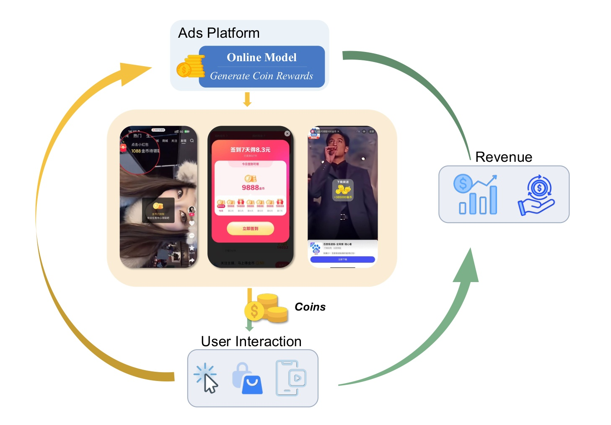
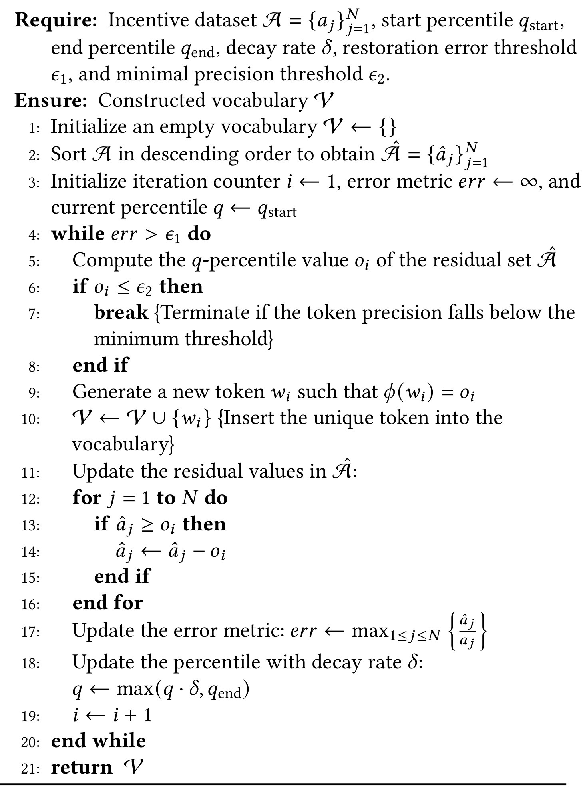
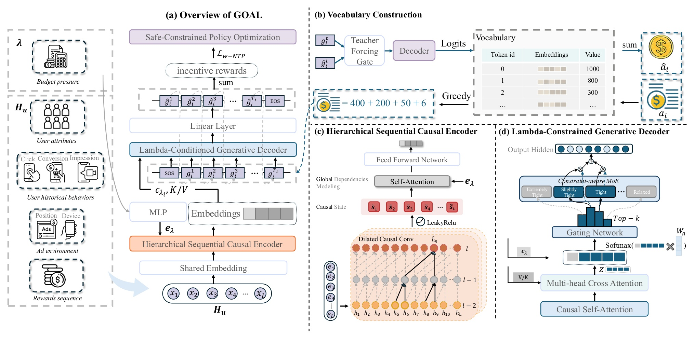
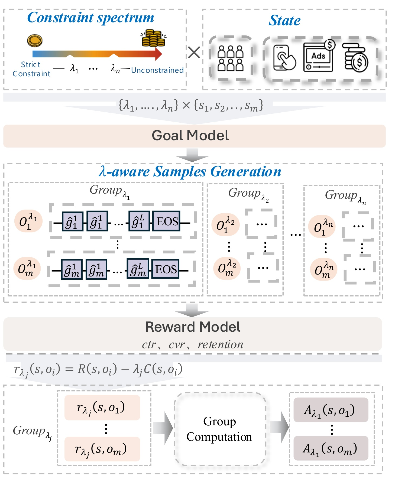
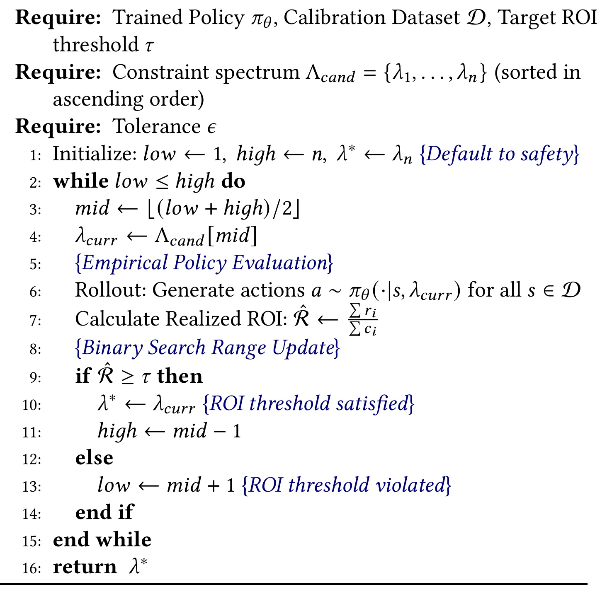
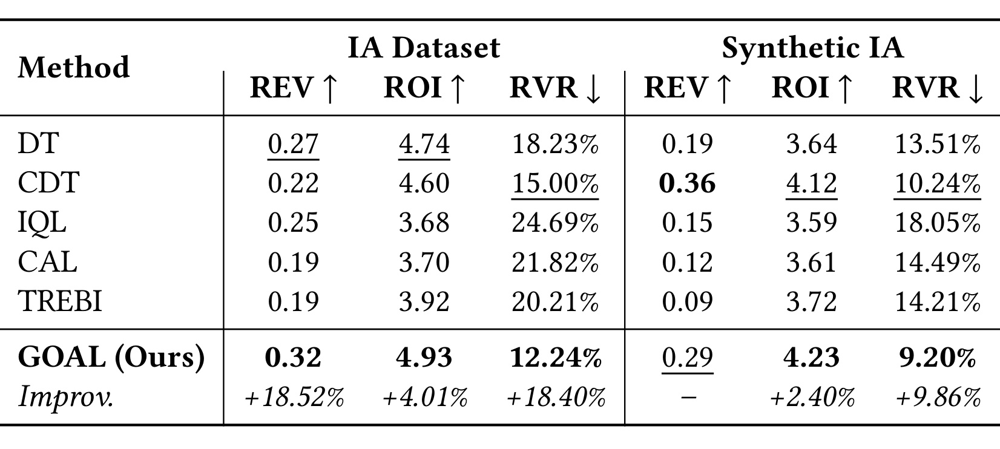
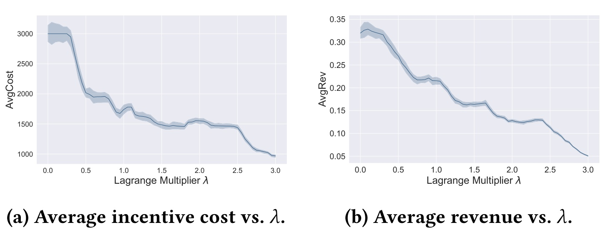
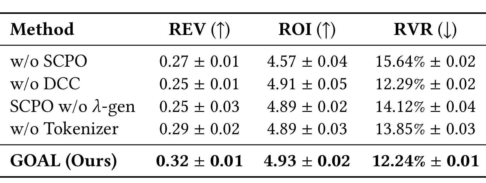
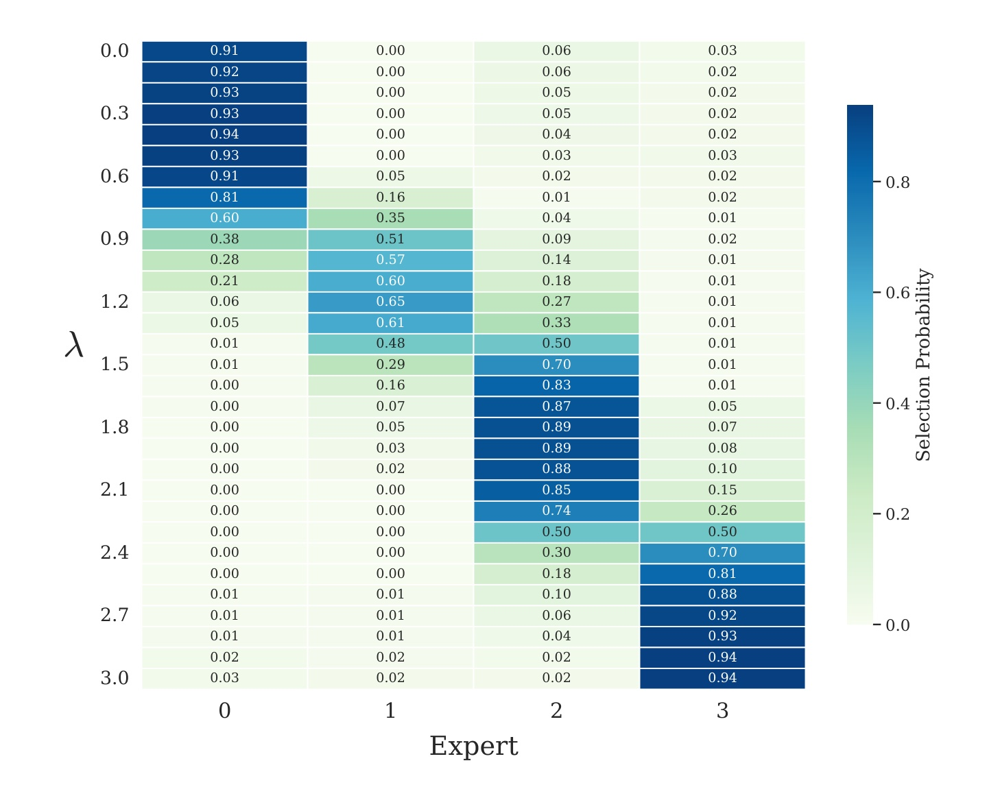
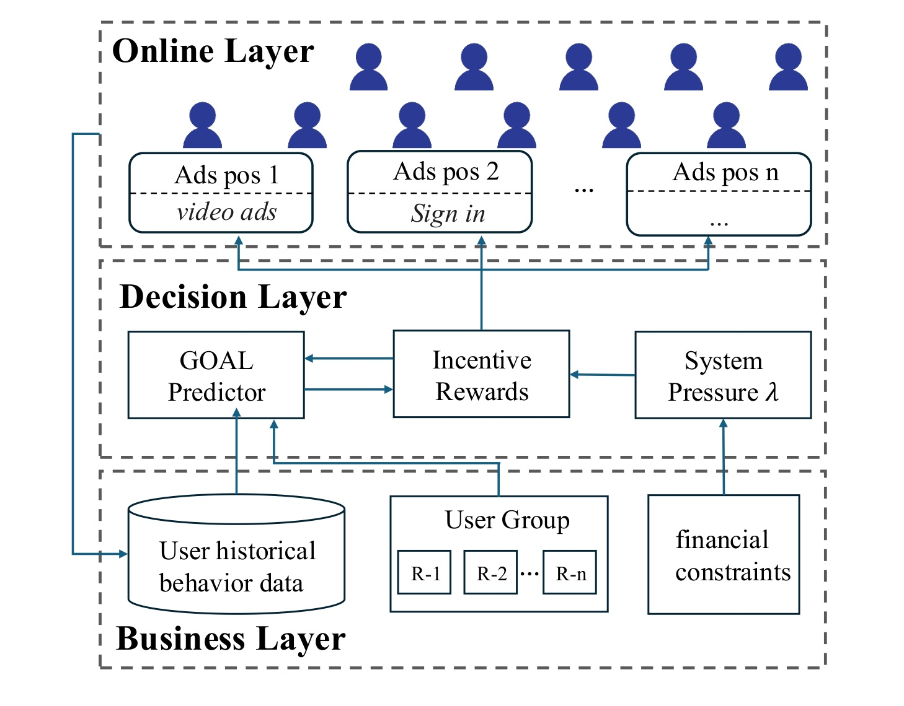

GOAL：带全局约束的激励广告生成式优化
《Generative Optimization for Incentivized Advertising with Global Level Constraints》由 Gege Chen、Ning Luo、Hao Jiang 等作者完成，一作主机构是电子科技大学，快手科技是主要合作机构；论文发表于 KDD 2026，并于 2026 年 8 月 5 日公开预印本。本文把平台每次发放多少金币、券或虚拟奖励视为一个带全局 ROI 约束的序列决策问题，论文入口为 arXiv:2608.04421。本轮在论文页面、首页与公开来源中均未核验到独立代码或项目仓库。
GOAL 的“生成式”不是生成推荐内容，也不是面向任意物品空间的通用生成式推荐。它生成的是经过离散化的激励金额 token 序列，服务于广告/推荐系统里的约束序列决策：历史行为决定当前金额，当前金额又影响后续互动、疲劳、收入和成本，系统还必须在一段时间窗口上守住 ROI。因此，最适合把它理解为“以自回归模型实现的受约束广告策略”，而不是把它夸大成推荐范式的普遍替代。
激励广告必须连续决定奖励金额并满足严格的系统级约束，但高频交互、延迟反馈和疲劳等非马尔可夫动态会破坏短期 uplift 与传统受约束强化学习的假设；长历史中的局部疲劳或意图突变还可能被全局注意力稀释，而常见生成式对齐又缺少跨时间耦合的 ROI 控制。
1. 背景和问题
激励广告与普通广告排序的区别，首先在动作空间。普通排序更多回答“展示哪个内容”，而激励系统还要回答“给多少”：发得太少，用户可能没有反应；发得太多，短期活跃上升却侵蚀长期利润，也可能训练出依赖补贴的行为。每次金额决策都产生即时成本，用户是否点击、转化、继续停留则可能延迟发生；连续曝光还会积累疲劳和饱和，使同一金额在不同历史位置具有不同边际价值。这些效应令单次样本的标签不再足以描述动作价值。

Figure 1 把这个闭环画得很直接：在线模型读取用户与环境状态，生成金币金额；金币改变用户互动，互动产生收入并回流为下一轮历史。图中最值得注意的不是“模型—用户”这一条边，而是成本与收入分别经过不同路径、不同时间尺度回到系统。平台真正优化的是多次决策累计的收入，同时要约束多次激励累计的成本。于是一个看起来像回归的“金额预测”，实际包含部分可观测、延迟响应和跨请求耦合；这也是论文没有停留在 CTR/CVR 预测再套一个分配器的原因。若模型只追求当次响应，可能把奖励集中给本来就会互动的用户，也可能在连续请求中反复刺激同一人；若只追求短期 ROI，又会错过对留存有正向影响但回收较慢的动作。闭环里因此至少存在策略选择偏差、延迟归因和长期状态漂移三种误差来源。
已有工业路线大致分三类。第一类是 uplift 或因果增益模型：先估计不同金额对用户行为的处理效应，再解背包或资源分配问题。这种预测—优化两阶段管线会把第一阶段误差放大到第二阶段，而且倾向关注短期响应。第二类是受约束离线强化学习：把成本写入拉格朗日奖励，显式追求长期价值；但高频行为往往不满足严格马尔可夫性，离线分布外动作又会让策略保守或产生估值偏差。第三类是 Decision Transformer、Constrained Decision Transformer 一类生成式序列模型，它们能吸收长轨迹，却通常把动作当作类别或直接回归标量，既没有解决 1 到 3000 金币的重尾数值精度，也没有把实时系统压力贯穿到模型结构与后训练中。
论文的关键判断是：ROI 不是每个请求独立满足的约束。若第 $i$ 次决策带来收入 $r_i$ 和成本 $c_i$，平台关注的是总收入与总成本的比，而非每一条样本的比值：
符号解释：$a_i$ 是第 $i$ 次激励动作，$r_i$ 与 $c_i$ 分别是对应收入和激励成本，$N$ 是约束统计窗口内的交互数，$\tau$ 是最低 ROI，$C_{\max}$ 是单次成本上限。分母把所有请求耦合起来：某个用户上的超额补贴可能要由别处的高效率转化弥补，因而不能把“样本级预测准确”直接等同于“系统级财务安全”。
GOAL 希望同时解决三个缺口：用局部因果卷积捕获突然疲劳与短期行为节奏，用自注意力补充长程依赖；把连续金额改写为可精确重建的离散序列；让同一策略在不同 ROI 压力下通过 $\lambda$ 条件切换，而不是每变一次业务阈值就重新训练。这个问题与推荐系统相关，是因为它发生在广告位、用户分群和线上排序/策略服务中；它与大模型方法相关，是因为它借用了自回归 token 化、MoE 路由和 GRPO 风格对齐。但论文的验证对象仍然是激励广告，不能从现有证据推断它能普遍改善召回、内容生成或开放域 Agent。
2. 方法
2.1 从 ROI 分式约束到 Incentive Vocabulary
第一步是用拉格朗日对偶把全局分式约束改写成可逐步求和的目标。论文从 $\lambda'\ge0$ 出发，经归一化得到有效惩罚系数 $\lambda=\lambda'\tau/(1+\lambda')$，在给定最优 $\lambda^*$ 时优化；这一推导把“整窗比值达标”转换成可在每一步累加的成本惩罚：
符号解释：$\pi$ 是激励策略，$\lambda^*$ 是与目标 ROI 对应的对偶变量；$r_i-\lambda^*c_i$ 是第 $i$ 步的收入减成本惩罚。较小 $\lambda$ 接近纯收入最大化，较大 $\lambda$ 更强地压低成本。这个变换让跨请求约束能够进入逐步奖励，但它不是自动安全证明：只有可行策略存在、对偶关系适用且部署时 $\lambda$ 校准仍有效，聚合 ROI 才可能满足阈值。连续金额的第二个难点是跨度大且重尾。直接回归会被大量小额样本主导，固定桶又会损失尾部精度。GOAL 构造数据驱动的 Incentive Vocabulary：先对金额降序排列，在当前残差集合上取分位数值作为一个 token；从所有可覆盖样本中减去它，再逐步衰减分位点。算法在最大相对重建误差低于 $\epsilon_1$ 或 token 精度低于 $\epsilon_2$ 时停止。一个金额随后按“每次取不超过当前残差的最大 token”贪心分解，得到数值单调不增的粗到细序列。

Algorithm 1 显示该词表不是把金额区间均匀切成若干桶。高分位值先吸收主量级，残差更新后再学习更细的币值；分位点随 $\delta$ 衰减，使后续 token 逐渐提高分辨率。这样，金额 656 可以由类似 400、200、50、6 的多 token 组合重建，而非被迫落入一个宽桶。优点是每个位置仍是分类问题，又能表达大范围数值；代价是序列长度、词表规模和重建误差之间需要调参，训练分布之外的新金额尾部也可能没有合适 token 组合。图中的停止条件还说明，词表精度不是无限追求：若继续加入极小 token，只会拉长序列并扩大解码错误累积。复现时应按金额分位数分别检查重建误差，而不能只报告全体平均误差，否则大量小额样本会掩盖少数高额动作的风险。
2.2 Hierarchical Causal Encoder 与 λ-conditioned MoE decoder
GOAL 的输入是长度 $L$ 的历史轨迹 $H_u=[x_{t-L},\ldots,x_{t-1}]$，每个事件包含状态特征和已发激励。Hierarchical Causal Encoder 先把事件映射成向量 $E$，再用 Dilated Causal Convolution 只读取过去位置，最后用自注意力覆盖整个窗口：
符号解释：$H^{(l)}$ 是第 $l$ 层扩张因果卷积的隐状态，$\tilde S$ 是卷积、残差与 LeakyReLU 后的因果状态序列，$e_\lambda=\operatorname{MLP}(\lambda)$ 是约束条件向量，$H_{\mathrm{enc}}$ 是送给解码器的表示。DCC 的感受野强调相邻行为的方向性，适合捕获突然疲劳；全局注意力再联系相距较远的行为。两者的顺序很重要：论文不是用卷积替代 Transformer，而是先保护局部信号，再做全局整合。解码器把普通 FFN 换成受 $\lambda$ 条件控制的稀疏 MoE。对中间表示 $z$，门控同时读取 $z$ 与约束上下文 $c_\lambda$，在 Top-$k$ 专家上归一化：
符号解释：$N_{\mathrm{exp}}$ 是专家数，$\alpha_j$ 是第 $j$ 个专家的稀疏路由权重，$\hat g_t$ 是第 $t$ 个金额 token，$W_{\mathrm{out}}$ 把解码隐状态投影到词表。约束并非只在最终 loss 中出现：它既作为编码器全局 token，又直接参与 MoE 门控，因此不同预算压力可以调用不同专家组合。训练时使用 teacher forcing，推理时则根据已生成前缀贪心选择下一 token，直到 EOS，再把 token 数值求和得到金额。

Figure 2 可按四块阅读。左侧总览把预算压力 $\lambda$、用户属性、点击/转化/曝光、广告环境和历史奖励汇合；上右的词表模块把金额标量与 token 序列双向映射；下中先以 DCC 产生局部因果状态，再用 self-attention 形成长程表示；下右的 decoder 在 causal self-attention 与 cross-attention 之后，由 $c_\lambda$ 调制 MoE 路由。训练信号从生成金额回到 weighted NTP 与 SCPO。这里没有内容语义 ID 或物品召回，因此其生成能力只能被解释为对金额动作空间的结构化建模。普通 NTP 会把 1000 金币 token 与 1 金币 token 的错误同等计数，数值后果却完全不同，论文因此按 token 的物理币值加权：
符号解释：$T_i$ 是样本 $i$ 的 token 长度，$v(g)$ 把 token 映射为币值，$\omega_t$ 是位置对应的数值权重，$\delta$ 防止小额 token 梯度消失。因为序列按金额从大到小分解，前部 token 通常影响主量级，加权 loss 把优化资源集中到高金额错误。边界是：若业务风险对小额但高频误差同样敏感，这个对数权重未必与实际预算损失完全一致。
2.3 P-Score 与 SCPO 对齐
最终转化稀疏，直接用消费或收入做奖励会让后训练方差很大。论文先训练多塔 P-Score，将收入贡献、滚动深度、留存和任务参与等信号融合为个性化效用。不同 tower 编码不同目标，融合层再把它们压成 SCPO 可使用的统一标量，这一步决定了“用户价值”在训练中的实际含义：
符号解释：$S_{\mathrm{obj}}$ 是辅助目标集合，$w_k$ 是目标权重，$\mathcal L_k$ 可按任务采用 BCE 等损失，$\hat y$ 是融合效用预测，$y_k^*$ 是第 $k$ 个目标标签。P-Score 使 SCPO 获得稠密偏好信号，但也把业务价值判断压进 $w_k$ 与标签定义：若留存、参与和收入权重选择偏斜，策略可能在 ROI 合规的同时损伤未被建模的用户体验。
SCPO 的核心是把单点 $\lambda$ 优化改成整个约束谱上的通用策略。训练从 $[0,\lambda_{\max}]$ 采样 $\lambda$，对每个状态与每个约束水平生成候选。一个用户状态因此会在宽松、中等和严格压力下分别产生动作样本，奖励也按对应成本惩罚重新计算：
符号解释：$P(\Lambda)$ 是约束谱采样分布，$\pi_\theta(\cdot\mid\lambda)$ 是条件策略，$R$ 是 P-Score，$C$ 是金额成本，$r^\lambda$ 是当前约束压力下的复合奖励。相同候选在不同 $\lambda$ 下会得到不同分数；模型因而学习从激进收入策略到保守成本策略的一族映射，而不是为一个固定预算点拟合一套参数。
不同 $\lambda$ 的奖励基线天然不同。若全局归一化，高 $\lambda$ 样本会仅因惩罚更强而被误认为低质量。SCPO 只在同一 $\lambda_j$ 的候选组内计算均值和标准差，让“策略质量”与“约束本身更严格”这两种影响分开：
符号解释：$o_i$ 是候选金额序列，$\mu_{\lambda_j}$ 与 $\sigma_{\lambda_j}$ 是该约束组内奖励统计量，$\epsilon$ 是数值稳定项，$A$ 是组相对优势。它回答的是“在同样压力下哪个候选更好”，避免把约束难度和策略质量混为一谈。随后采用 PPO 风格裁剪和参考策略 KL 正则：
符号解释：$\rho$ 是新旧策略概率比，$\varepsilon$ 限制单次更新幅度，$\beta$ 控制对参考策略的偏离。裁剪与 KL 抑制激进更新，但不能代替硬预算闸门；如果奖励模型错估极端金额，策略仍可能在模型认为“安全”的区域探索出真实风险。参考策略还把探索范围锚定在已有行为附近，所以 SCPO 的“安全探索”仍以日志覆盖为前提，不能为离线数据从未观察到的大额动作提供可靠保证。

Figure 3 体现了 SCPO 与普通 GRPO 的关键差异。顶部先取约束谱与状态的笛卡尔积，GOAL 为每个 $(s,\lambda)$ 组合生成多条金额序列；Reward Model 输出 $R-\lambda C$，之后不是把所有样本混为一组，而是在每个 Group$_\lambda$ 内计算优势。这样一批状态可复用到多个压力水平，训练出的策略在推理时仅改变 $\lambda$ 输入即可切换行为。图的下半部分还强调，组统计量只比较同一压力下的候选，不会让严格约束组因绝对 reward 更低而整体受罚。它提高了约束复用效率，也使计算量随候选数与约束档位数相乘，训练成本并非免费；如果约束谱采样过密，rollout 与奖励评估会成为主要开销，如果过疏，又可能在相邻业务阈值间插值不稳。
2.4 λ calibration：把通用策略变成可部署约束控制
附录把 $\lambda$ 候选区间设为 $[0,\lambda_{\max}]$：0 对应纯收入最大化；实务中以最大业务 ROI 目标近似上界，并按步长离散采样。例如 $\lambda_{\max}=3.0$、步长 0.5 时共有 7 个候选档位。部署时，模型没有直接接收“目标 ROI 就一定等于某个 $\lambda$”的解析映射，而是在校准数据上二分搜索满足阈值的最小安全候选。

Algorithm 2 先把 $\lambda^*$ 初始化为最大候选，意味着搜索或评估异常时默认保守；每次在中点 $\lambda_{\mathrm{curr}}$ 上 rollout，计算聚合收入与成本的实现 ROI。若达到 $\tau$，记录该点并向更小 $\lambda$ 搜索，以尽量保留收入；若不达标，则向更大惩罚搜索。算法并不是寻找回报最大的任意点，而是在满足阈值的候选中尽量减少惩罚，保留增长空间。候选集合有序使搜索从线性扫描降为对数复杂度，但前提是实现 ROI 对 $\lambda$ 足够单调；若统计噪声让相邻档位交叉，二分方向就可能错误。当用户分布、活动预算、广告库存或疲劳状态突变时，离线校准的 $\lambda^*$ 可能失配；真正上线仍应配置实时预算上限、异常回退和重新校准触发器。
3. 实验结果
3.1 数据、环境、基线与指标
真实 IA 数据来自某头部短视频平台的激励广告系统，时间为 2025 年 11 月 5 日至 11 月 12 日，约有 13 万日活用户和每日 184 万次激励曝光。实验用前 6 天训练、最后 1 天测试。论文没有公开用户级原始数据，这使外部复现只能重建方法而不能完全重现工业分布。基线覆盖 DT、CDT 两种生成式序列路线，IQL 无约束离线 RL，以及 CAL、TREBI 两种约束 RL。
合成 Synthetic IA 沿用真实特征对齐，生成 1 万条轨迹，混合贪心、随机和固定中等奖励三类行为策略。每条会话长度 $T=100$，动作 $a_t\in\{0,1,\ldots,10\}$。疲劳按下式递推：
符号解释：$f_t$ 是疲劳，$a_t$ 是当前激励，$\rho=0.9$ 控制疲劳自然衰减，$\eta=0.5$ 控制激励累积，$p_t$ 是用户参与概率，$\alpha=0.8$ 描述即时激励效用，$\beta=1.2$ 描述疲劳敏感度。该环境能机械地验证“短期多发钱、长期疲劳拖累 ROI”，但疲劳是确定性一阶状态，没有个体异质、跨活动迁移、反感阈值和恢复周期变化，不能替代真实长期用户实验。
指标包含平均收入 REV、总收入/总成本的 ROI，以及 ROI Violate Rate（RVR）：滑动窗口实现 ROI 低于目标阈值的比例，越低越好。RVR 比单个整体 ROI 更接近运行稳定性，因为一个总体合规策略仍可能在许多局部窗口越界；不过论文未在正文给出窗口长度及多种窗口敏感性，因而不能把 12.24% 等同于任意业务周期的违约概率。
3.2 主结果：真实 IA 强，合成环境并非所有指标都第一
在真实 IA 上，GOAL 的 REV 为 0.32、ROI 为 4.93、RVR 为 12.24%。DT 的三项数值为 0.27、4.74、18.23%，CDT 为 0.22、4.60、15.00%；GOAL 的表内改善行报告 REV +18.52%、ROI +4.01%、RVR +18.40%。这说明在真实日志评估中，它同时提高收入与成本效率，并减少局部窗口违规，证据比只提高一个加权 reward 更完整。

Table 1 也给出必须保留的反例：在 Synthetic IA 上，GOAL 的 REV 为 0.29，低于 CDT 的 0.36，因此论文没有在 Improv. 行报告收入提升；GOAL 的优势是 ROI 4.23 和 RVR 9.20%，相对表中次优 4.12 与 10.24% 更好，表内报告 +2.40% 和 +9.86%。这恰好符合约束优化的性质：更高收入不一定更安全。GOAL 在合成环境选择了较低收入、较高 ROI、较低违规的点，不能把结论简化成“所有长期指标全面领先”。
基线结果还显示生成式方法普遍比 IQL、CAL、TREBI 更适合这组数据，但证据只来自一个真实平台切片与一个基于该切片构造的合成器。模型采用 $\lambda=0.5$ 做主比较，是否对所有目标 ROI 都保持排序尚未通过多阈值主表证明。真实日志又存在行为策略选择偏差，离线评估能否准确估计 GOAL 在罕见大额动作上的反事实回报，是外部读者无法从表 1 单独确认的部分。
3.3 约束曲线：λ 是可控旋钮，但不是目标 ROI 的永久映射
作者在测试集上把 $\lambda$ 从 0 扫到 3。平均激励成本由约 3100 单调降至约 950，平均收入由约 0.32 降至约 0.05；两条曲线中间有平台和小幅波动，但整体方向一致。低 $\lambda$ 策略更激进，高 $\lambda$ 策略逐渐减少低效率交互的补贴。这个结果支撑了“同一模型无须重训即可连续调节成本—收入权衡”。

Figure 4 的信息边界也很清楚：它画的是成本与收入，不是实现 ROI 随 $\lambda$ 的直接曲线。二者同时下降时，收入/成本比能否单调上升取决于相对下降速度；Algorithm 2 的二分搜索默认了可利用的单调关系，但图 4 本身没有展示各 $\lambda$ 的置信区间下 ROI 合规率。左图在 0.5 附近成本下降最陡，右图相应收入也快速下降，提示约束旋钮在不同区间的边际影响并不均匀；1.5 到 2.4 附近又出现平台，说明扩大 $\lambda$ 不一定线性换来更多安全余量。部署时应同时监控 cost、revenue、ROI 与 RVR，用实时数据验证 $\lambda$ 的局部单调性，并在平台区间防止噪声主导校准，不能只看离线平均曲线。
3.4 消融：组件分别对应数值精度、历史建模与约束适配
目标 ROI 设为 $\tau=3.0$ 时，完整 GOAL 为 $0.32\pm0.01$ REV、$4.93\pm0.02$ ROI、$12.24\%\pm0.01$ RVR。去掉 SCPO 后变为 0.27、4.57、15.64%，三项一起恶化，说明只有 SFT 的金额生成器无法守住约束。去掉 DCC 后 REV 降到 0.25，但 ROI 4.91、RVR 12.29% 接近完整模型；DCC 的主要收益更像从高频局部历史中提取收入机会，而不是单独承担合规。

Table 2 中固定 $\lambda$ 的 SCPO 得到 REV 0.25、ROI 4.89、RVR 14.12%，显示不做 $\lambda$-generalization 会更保守且适配性差。去掉 tokenizer、改成直接标量回归后为 0.29、4.89、13.85%，证明粗到细离散化不仅影响预测精度，也会传导到成本稳定性。四个变体的退化方向并不相同：去 SCPO 首先伤害约束，去 DCC 主要损失收入，固定 $\lambda$ 同时牺牲收入与动态适配，直接回归则介于完整模型和弱变体之间，这与各模块的设计角色基本吻合。不过各消融不是严格等算力比较：序列 decoder、MoE 和 SCPO 的训练量都高于直接回归；论文没有列训练时长、推理延迟和参数量，因此不能判断这些增益在所有线上 SLA 下是否划算。
3.5 专家分化：约束信号确实进入了 MoE 内部
MoE 路由热力图提供了比最终指标更接近机制层的证据。接近 $\lambda=0$ 时 Expert 0 的概率约 0.91，其他专家接近零；约束增大到 0.9-1.2，权重逐步转向 Expert 1；约 1.4-2.2 主要由 Expert 2 接管；2.4 以后 Expert 3 迅速上升，在 $\lambda=3.0$ 达 0.94。中间区间存在混合，而非四个硬阈值。

Figure 6 表明专家分工不是人工标签指定，而是在共同训练中随 $c_\lambda$ 涌现：Expert 0 更像收入优先策略，Expert 3 更像成本敏感策略，1 和 2 承担过渡区。约 1.4 时 Expert 1 与 2 的概率接近，约 2.3 时 Expert 2 与 3 各占一半，这两条过渡带说明路由能用混合权重平滑插值，而不是到阈值就突变。它增强了“$\lambda$ 被模型实际使用”的可信度，但还不足以证明专家语义完全稳定。若线上分布改变，专家可能坍缩、负载不均或把用户群差异和约束压力混在一起；后续应按用户分群、广告位与活动类型分别审计路由，并报告专家负载、极端金额占比与各专家的实际成本分布，而不能只看全体平均概率。还应检查相邻 $\lambda$ 档位是否因门控抖动产生金额不连续。
3.6 线上部署与四周 A/B
线上系统把用户历史行为、用户组、财务约束和实时系统压力输入决策层，GOAL Predictor 输出 Incentive Rewards，再分发到不同广告位。论文报告为期 4 周的 A/B：实验组部署 GOAL，对照组使用生产基线；文中表述实验组覆盖随机抽取用户的 65%，但没有进一步交代对照比例与流量互斥细节。相对基线，ROI 提高 2.184%，收入提高 2.559%，停留时长和 DAU 未出现显著负向变化，核心收益的 $p$-value 为 0.03。

Figure 5 显示 $\lambda$ 来自 System Pressure，而 financial constraints 从业务层向上输入；用户组和历史数据则共同进入 GOAL Predictor，奖励输出再回到多个广告位。这个结构说明线上版本不是让模型自由决定预算，而是由外部系统设定压力，再由模型在约束下分配金额；历史回流箭头还意味着状态与动作会持续闭环更新。工程上应把模型输出与财务硬限额分开：前者优化软权衡，后者负责超额拒绝、降级和熔断。四周在线结果是论文最强的外部有效性证据，但仍缺置信区间、分层效果、多重检验、绝对成本与峰值预算越界数据。尤其 $p=0.03$ 只说明在给定检验下观察到差异，不能替代疲劳、弱势用户、公平发放和硬预算安全审计。
4. 总结
GOAL 的真正贡献，是把激励广告里的金额决策整理成一条一致链路：拉格朗日变量把全局 ROI 压力变成条件输入；动态分位数词表把重尾连续金额改成粗到细 token；DCC 与全局注意力兼顾局部疲劳和长期行为；MoE 让不同压力区间形成专家分工；weighted NTP 关注高金额误差；SCPO 在多个 $\lambda$ 上做组内相对优化；最后再用校准集搜索满足业务阈值的 $\lambda^*$。真实数据、合成疲劳环境、消融、约束曲线、专家路由和四周线上实验构成了相对完整的证据链。
我的判断是，这篇论文对广告/推荐系统最有价值的部分不是“生成式”标签，而是把动作表示、历史状态、对齐奖励和部署约束同时参数化。它适合金额、券面额、曝光频控等有序数值动作；若迁移到一般推荐，仍需重新定义动作词表、全局约束和反事实评估。对大模型后训练的启发则是：当 reward 尺度随条件系统性漂移时，应在同条件组内归一化，而不是用全局组相对优势；不过这个结论仍需在 IA 之外验证。
需要保留至少四个风险。第一，金额离散化存在量化误差，极端尾部或新活动金额可能落在词表覆盖外，weighted NTP 也未必等价于真实预算损失。第二，$\lambda$ 与目标 ROI 的映射依赖校准集和单调性，流量、价格、库存或用户结构突变会造成失配。第三，合成疲劳只是 $f_{t+1}=\rho f_t+\eta a_t$ 的简化过程，无法证明真实用户的反感、补贴依赖和跨场景疲劳被妥善建模。第四，平均 ROI 合规不等于公平或安全：不同收入、年龄、活跃度用户可能受到不同激励诱导，平台还需要用户级上限、活动级硬预算、敏感群体审计和紧急熔断。第五，线上实验虽给出正向收益与 $p=0.03$，但缺少置信区间、分群长期留存和极端预算事件，外推应保持克制。
后续最值得做三组复现。其一，在同一行为模型下比较动态分位数 token、均匀桶、对数量化和 mixture density 回归，按金额分位数报告重建误差、RVR 与推理延迟，确认收益是否来自序列表示而非额外容量。其二，构造校准分布向线上分布漂移的压力测试，追踪 $\lambda$-ROI 单调性、二分搜索失配率和保守回退触发频率。其三，在真实或更丰富的模拟器中加入异质疲劳、跨活动迁移、公平约束与硬预算，以收入、留存、RVR、最坏分群损失和峰值成本联合评估。若代码后续公开，还应重点核验 P-Score 权重、候选 $\lambda$ 步长、MoE Top-$k$、校准窗口和线上保护逻辑；这些细节比单纯复现表 1 更决定方法能否安全落地。